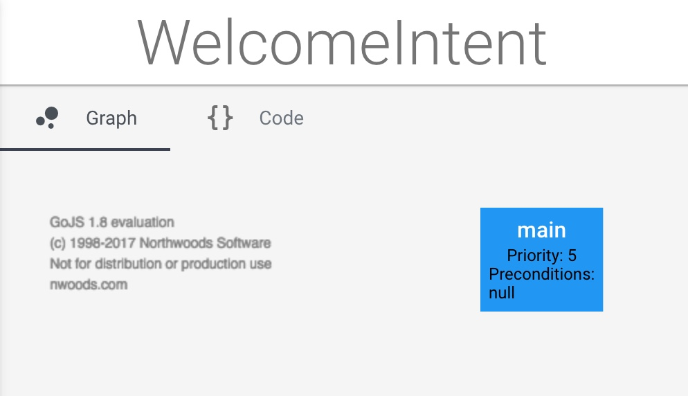

In this example, we will build a basic Hello World application using the Cuneiform Development Environment, which will respond to us with "Hello World" when we greet our project.
First, wee must run Cuneiform, and access the Cuneiform development environment in your browser. If you have not done so, visit the Quick Start tutorial and setup the platform.
A Cuneiform app represents the development environment of your application. To create an app:
Provide a name for the app. In this case, let's call it "Hello World".
When our HelloWorld app was created, an intent named "WelcomeIntent" gets created automatically.
An intent maps what a user says to an action, or a set of actions your application performs. To see more details about WelcomeIntent, click on Intent Properties ( icon) on the navigation menu on the top right corner of the environment.
In the Sample Utterances section, you may enter examples of what you might expect users to say when they are greeting our application. Since we are creating a basic hello world application, we should include basic greetings such as the ones which are provided by default. However, you may add more samples if you wish. The more sample utterances we provide, users will be provided with more ways to communicate with the application such that the system would understand.
As we can observe, intents also consist of sections called Intent Initiative, and Slots. To learn more about these sections, read about it on the Intents section of the Cuneiform documentation.
If any changes were made to the intent, click Done. Otherwise, navigate to the previous page from your browser to the main view.
Cuneiform approaches the development of conversational applications with a different concept. This concept follows a data structure similar to that of a Graph, which consists of a set of nodes, interconnected by edges.
Each edge connecting to a single node may consist with a set of preconditions. To learn more about the Conversation Graph approach to development of conversational interfaces, read about it on the Conversation Graph section in the Cuneiform documentation.
In our case, we have a very simple conversation graph, consisting of a single main node without any preconditions.
The set of actions to be taken when a node is visited is to be written by the developer. Each node contains a priority, set of preconditions, and action code. The action code is written in the Cuneiform programming language, which is very similar to Javascript.
In order to view the action code, first select the Nodes tab on the right navigation menu. Thereafter, we are provided with the option to create a new node, as well as details of the existing nodes.
In this case, we will be presented with the single main node, which is available for the WelcomeIntent. To view the action code for this main node, click on the Action Code button inside the card of the main node.
The action code represents the set of actions that would take place when the node is visited. This action code written in the Cuneiform programming language represents the response the application would provide when the main node is visited in the WelcomeIntent intent.
In this case, it would respond with one of the following responses, which is selected by the system at random.
The Try it Emulator lets us simulate the conversation we have developed in a text based environment. This is done as follows:
The system responds with one of the responses that had been provided in the action code.
Let's play around with the action code a bit this time.
In the action code, replace all of the existing responses with a single "Hello World" response. Your action code for the main node should now look like this.
var response = new Response;
response.responseSet = [
"Hello world"
];
response.userAction = "info";
response.send;
ExitIntent;
Click on Save Changes, and then save the project by clicking on the icon in the navigation menu on the top right to save the project. Then say "Hello" again in the emulator and see the result.
The application now responds with "Hello world".
Congratulations! You have created your very own Hello World application on Cuneiform.
In the next section, we will get to learn more about intents, and their properties.